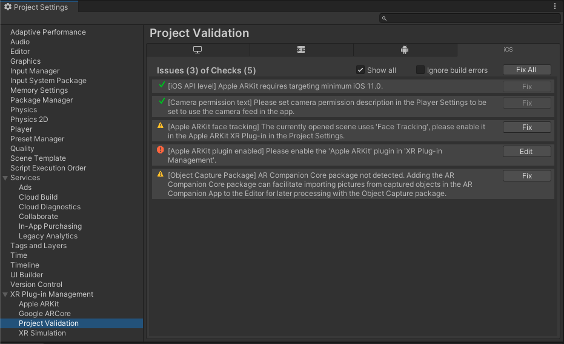

The Project Validation system helps you identify and fix common scene and project configuration issues for the XR packages you have installed. XR packages can include rules for the validation system. The system evaluates these rules when you make a build and whenever the Project Validation section is open.
To open Project Validation, go to Edit > Project Settings > XR Plug-in Management > Project Validation.
The Scene Validation section appears at the top of the Project Validation panel. It controls which Capability Profiles the validation system uses when evaluating scene-specific rules. Some XR packages define validation rules that only apply when certain capabilities are active, for example, rules that check whether you’ve correctly configured scene objects for a particular device or platform.
Use the Selected Profiles dropdown to choose which Capability Profile assets to validate against.
| Option | Description |
|---|---|
| Turn Off | Disables scene validation. Scene-specific rules aren’t evaluated. |
| Everything | Validates against all Capability Profile assets in the project. |
| Profile name | Validates against the selected profile or profiles only. |
Note: If no Capability Profile assets exist in your project, the dropdown shows No capability profiles in project and you can’t enable scene validation. Capability profiles are typically provided by the XR packages you have installed.
Unity saves your profile selection per user and persists across sessions. If scene-specific validation errors aren’t appearing as expected, check that you’ve selected the correct profile, and that the relevant scene is open.
Note: Scene-specific validation rules aren’t evaluated while the Editor is in Prefab editing mode. If expected errors aren’t appearing, exit prefab editing mode and re-open the Project Validation panel.
The Validation Rules section lists the project and scene validation checks for each platform build target. Select a platform tab to view the checks for that target. You don’t need to swap targets in the Build Settings window. The validation system evaluates the same rules at build time for the selected build target.

| Property | Description |
|---|---|
| Platform tabs | The validation checks for each platform, grouped by platform. Select a tab to view the checks for that platform. |
| Issue list | The list of issues found when evaluating the rules. Each issue has a severity level, a description, and an action button. |
| Show all | Displays all issues regardless of severity. Issues marked with a green check indicate checks that passed and don’t require action. Successful checks are hidden unless you enable Show all. |
| Ignore build errors | Ignores build errors. This can be useful when debugging build problems. |
| Fix all | Corrects all issues that have a fix available. |
Tip: If an issue has scene objects associated with it, click on the message to select or highlight those objects in the Unity Editor.
The status icons to the left of each validation issue indicate its status and severity.
| Status | Description |
|---|---|
| Validation passed because the project and scene are set up correctly, or the rule isn’t applicable. Successful checks are hidden unless you enable Show all. | |
| Validation failed but doesn’t block building the project. You can ignore these if you have set up your project differently than recommended. | |
| Validation failed and blocks building the project. You must fix these issues before you can build. |
The Fix button automatically fixes the issue in your project or scene. The Edit button takes you to the appropriate place in the Unity Editor where you can correct the issue. Both buttons provide a tooltip explaining the steps to manually correct the issue.